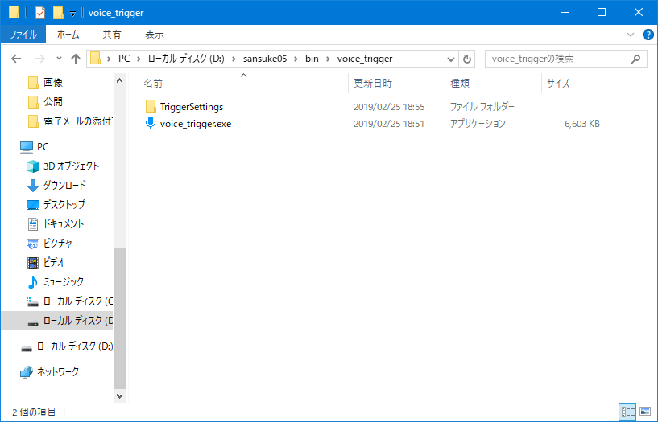
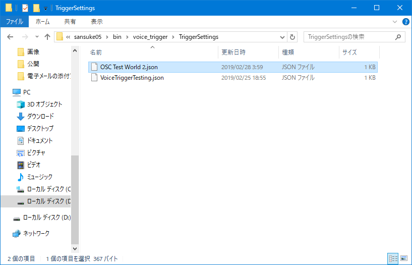
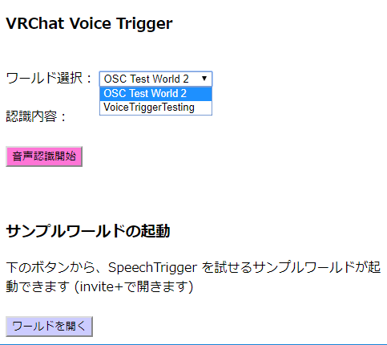

Google Chrome 以外のブラウザでは正しく動作しませんので使用する際は予めデフォルトのブラウザに Google Chrome を設定するようお願いします
voice_trigger.exe を開きます
ブラウザが開いてwebページが表示されるのでワールド選択メニューから行きたいワールドを選択します
「音声認識開始」ボタンを押します
VRChatで選択したワールドに移動し、ワールドに設定されたトリガーに対応した言葉を話すとワールドオブジェクトが反応します
デフォルトでは、デモワールドの設定データのみ入っていますが、自分でVoiceTriggerが使えるワールドを制作したり、他の人が作ったワールドのVoiceTriggerデータを導入する事で、そのワールドでVoiceTriggerを使えるようになります。
ワールドの制作方法や、VoiceTrigger設定データの制作方法については、VRChat Voice Triggerの使えるワールドの制作について をご覧下さい。ここではその設定データを導入する方法について記載します。
以下のように、VoiceTriggerを一度でも起動すると、アプリと一緒に「TeiggerSettings」フォルダが作成されます。

この「TeiggerSettings」フォルダの中に、「●●.json」形式のVoiceTrigger設定データを置きます。

この状態で voice_trigger.exe を起動するとwebページのワールド選択メニューに先ほどの設定データのワールド名が出てくれば、導入成功です。

webページのワールド選択メニューから「VoiceTriggerTesting」ワールドを選択します。
「ワールドを開く」ボタンかこちらにアクセスしてサンプルワールドを開くか、私(VRCID:sansuke05)がサンプルワールド(VoiceTriggerTesting)を開いているときにjoinすることで VRChat Voice Trigger を体験していただくことができます。
ここでは VRChat Voice Trigger の使えるワールドを制作する為の簡単な概要について記載します。
Voice Triggerを使えるワールドを制作するためにはVRChat SDKのVRC_OscButtonInを設定したワールドを制作します。
具体的なVRC_OscButtonInとTriggerの設定方法については、じぇしかさんのこちらの記事の OSCメッセージ受信側の実装 の箇所を参考に制作してみてください。
設定ファイルは右クリックして「プログラムから開く」からメモ帳などのテキストエディタで開く事で閲覧できます。
Voice Trigger 設定データは以下の画像のような構造になっています。
新しい設定データの作成手順は以下のようになります。
テキストエディタで新規ファイルを作成
上記の画像を参考にして、対応したVRC_Osc Button Inの項目と、Button On/Off時のキーワードを記載
ファイルを(適当な名前).jsonという形式で保存 (このとき、文字コードの項目をUTF-8を指定して保存する様にしてください。他の文字コードではプログラムが正常に読み取れません)
このソフトウェアを使用して生じたいかなる障害について、開発者であるサンスケ(sansuke05)は一切の責任を負いかねます。
プログラムの不具合、要望等については下記の連絡先までご連絡お願いします。
Twitter: @sansuke05_vr
E-mail: sansuke05@gmail.com
Github: sansuke05
個人discordサーバー: キラキラママラボ
また、このプログラムのソースコードは以下のサイトにてオープンソースで公開されています。(pull request等もお待ちしております(特にwebサイトのUI))
アプリ本体：https://github.com/sansuke05/VRC-voice-trigger-local-server (MITライセンス)
webページ：https://github.com/sansuke05/VRC-voice-trigger-web